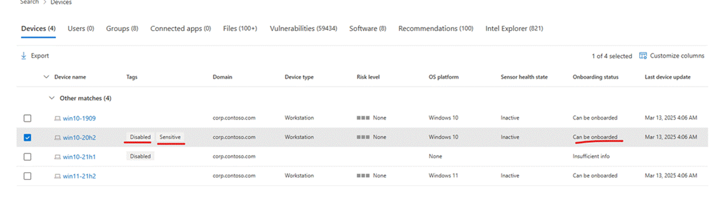
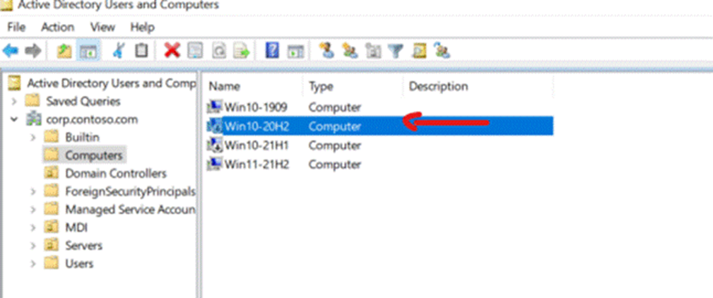
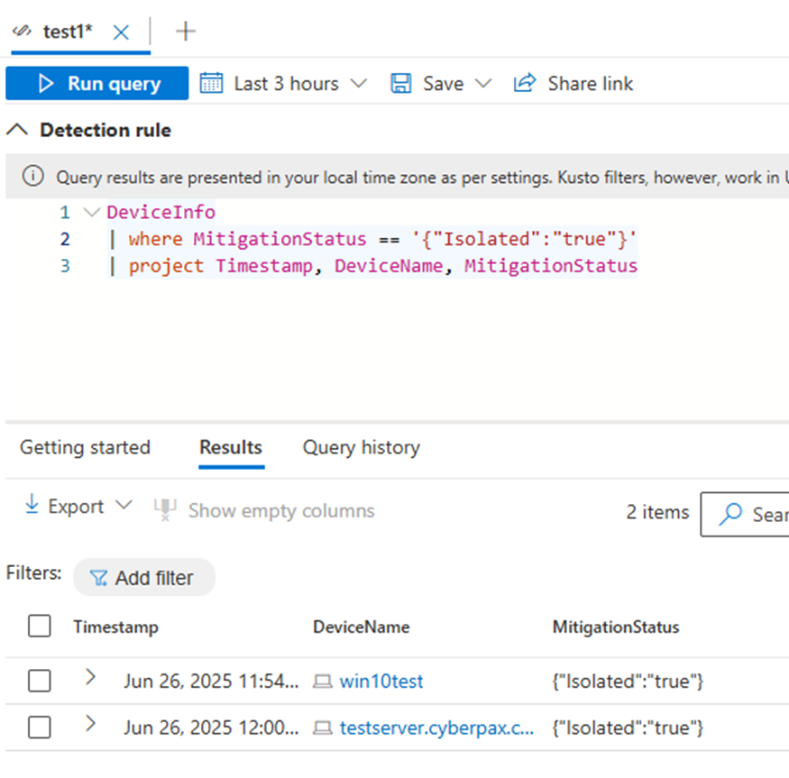
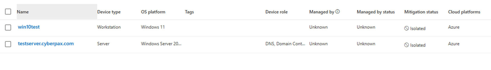

Data-Driven Tags – Disabled and Isolated in Microsoft Defender for Endpoint
Summary
This article provides detailed technical insights into the behavior and detection of data-driven tags—specifically the Disabled and Isolated tags—in Microsoft Defender for Endpoint (MDE). These tags are not directly stored in standard data tables but are inferred from system signals and logic, which may cause confusion for security teams attempting to audit or automate actions based on them.
 Tags such as "Disabled" and "Sensitive" shown in the MDE portal
Problem
Tags such as Disabled and Isolated appear in the Microsoft Defender XDR portal, but they are not queryable via standard tables such as DeviceInfo in Microsoft Defender for Endpoint. This limitation complicates data discovery, reporting, and automation efforts.
Environment
- Microsoft Defender for Endpoint (MDE)
- Microsoft Defender for Identity (MDI)
- Microsoft Sentinel
- Kusto Query Language (KQL)
Root Cause
These tags are not static fields in the MDE schema. They are derived from specific system conditions and backend logic:
- The
Disabledtag is triggered when MDI detects that a computer account has been disabled in Active Directory. - The
Isolatedtag is applied when a device is placed in network isolation by MDE.
These behaviors are expected and by design.
Resolution
🔍 Querying for Disabled Accounts (MDI Related)
While the Disabled tag does not appear in MDE data tables, related conditions can be inferred from MDI data using KQL in Microsoft Sentinel or the M365 Defender advanced hunting portal.
 Device status in Active Directory showing disabled state
Sample Queries:
IdentityDirectoryEvents
| where ActionType == "AccountDisabledChanged"
| project Timestamp, TargetAccountUpn, TargetDeviceName
IdentityInfo
| where IsAccountEnabled == false
| project AccountName, AccountDomain, Timestamp
These queries help identify accounts that have been disabled, likely triggering the
Disabledtag in the portal.
🔍 Understanding the Isolated Tag (MDE Related)
The Isolated tag reflects device isolation status. It is not a column in the DeviceInfo table, but isolation actions can be tracked via mitigation data.
 Query to detect isolated devices based on mitigation status
Example Query:
DeviceInfo
| where MitigationStatus == '{"Isolated":"true"}'
| project Timestamp, DeviceName, MitigationStatus
 Devices listed with "Isolated" status in the portal
This approach retrieves devices currently marked as isolated, correlating with the tag shown in the portal.
Recommendation
When working with data-driven tags, focus on identifying the triggering condition rather than searching for the tag itself in the data. These tags behave more like dynamic signals or triggers, not stored attributes.
Key Takeaways:
- Tags may not correlate to a specific schema field.
- Use contextual queries to infer the state behind the tag.
IsolatedandDisabledare confirmed data-driven tags behaving as logic-based signals.- Collaboration with the MDI support team may be necessary for advanced scenarios.
Next Steps
If the environment involves both MDI and MDE, and further clarification is required regarding data correlation or tag origins, it's recommended to escalate to MDI support for authoritative insights and internal documentation.